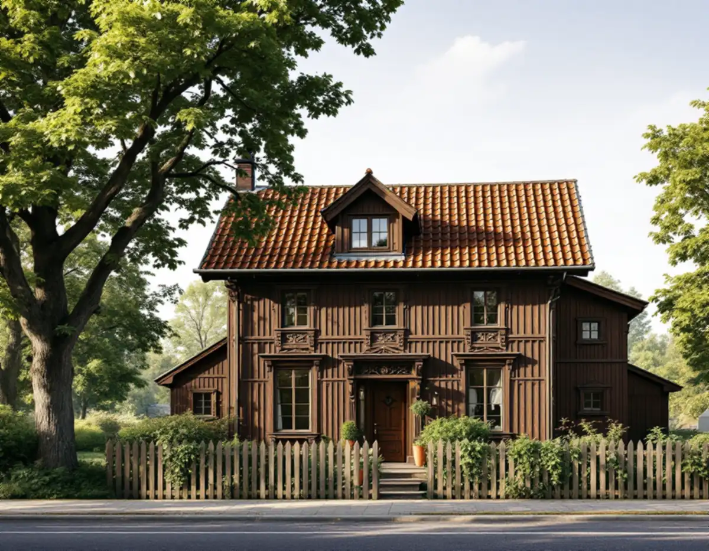
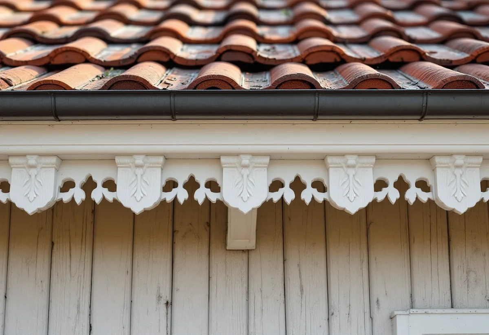
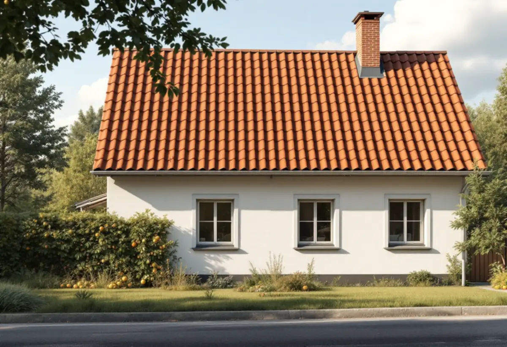

Epok och lov
Vi bestämmer husets epok och om utökad lovplikt berör arbetet.
I Duvbo i Sundbyberg ligger villor från sekelskiftet 1900, 1920-talet och 1930–40-talen. Kommunens miljöprogram beskriver vilket tak som hör till varje epok, och oftast är svaret rött lertegel med synliga taktassar. En takrenovering i Sundbyberg handlar därför om att lägga om taket utan att tappa de detaljer som gör husen till Duvbohus.

Riksantikvarieämbetet pekade 1987 ut Duvbo som riksintresse för kulturmiljövården. Motiveringen var att Duvbo är ett av de första exemplen på en välorganiserad egnahemsförstad i Stockholmstrakten.
Husen är framför allt byggda kring sekelskiftet 1900 och under 1920-talet. Sekelskiftesvillorna byggdes ofta av ägarna själva och visar en rik provkarta på tidens smak. Senare, på 1930- och 1940-talen, tillkom enkla slätputsade hus i ljusa kulörer.
Kommunen skriver att det inte i första hand är de enskilda husen som är värdefulla, utan området som helhet. Ett tak som avviker påverkar alltså mer än det egna huset.

Miljöprogrammet för Duvbo har en tabell över material och utförande för varje epok. Sekelskiftesvillan i schweizerstil hade rött lertegel, falsad slätplåt eller ibland papp, och synliga kontursågade taktassar. Taken var ofta oregelbundna och hade ibland torn och kupoler.
1920-talsvillan fick enkla eller brutna sadeltak med rött lertegel och synliga taktassar. Husen från 1930- och 40-talen fick flacka tak, även de täckta med rött lertegel och med synliga taktassar.
Taktassar är de utstickande ändarna av takstolarna under takfoten. På sekelskiftesvillorna är de kontursågade – utskurna i en dekorativ form. När ett tak läggs om är det lätt att de byggs in bakom en ny takfotsbräda eller sågas av för att det går snabbare.
Vi gör tvärtom. Taktassarna mäts upp och fotograferas innan arbetet börjar. De som är ruttna i änden skarvas eller ersätts med nya i samma form, och takfoten byggs så att de syns som förut. Samma gäller vindskivor och lister med profiler.
I samband med en planändring utökades bygglovsplikten i Duvbo. Den omfattar bland annat utbyte av takläggningsmaterial, och enligt miljöprogrammet är åtgärder inom den utökade lovplikten kostnadsfria.
En omläggning med samma tegel kräver inget nytt lov. Vill du byta från tegel till ett annat material behöver du alltså söka bygglov – och miljöprogrammet säger att husets tidstypiska uttryck inte får förvanskas genom byte av takmaterial. Hus som byggts senare och avviker bör anpassas i takmaterial och färg till omgivningen när de ändå renoveras.
Utanför Duvbo gäller de vanliga reglerna. På ett en- eller tvåbostadshus behövs i regel inte bygglov för att byta taktäckningsmaterial, men ändringen ska vara varsam och passa omgivningen, och detaljplanen ska följas. Kontrollera med Sundbybergs stad om du är osäker.
Vi har nära till Sundbyberg från Bromma. Även utanför Duvbo är det ofta läkt och papp under ett tegel som fortfarande håller som behöver bytas. Läs mer om takrenovering och takomläggning.
Under ett gammalt tegeltak ligger oftast råspont, alltså brädor som spikats tätt över takstolarna. På ett hus som är över hundra år gammalt kan enstaka brädor ha ruttnat där vatten har kommit in under lång tid, till exempel runt skorstenen eller i en ränndal.
När teglet är nere ser vi hela råsponten. Skadade brädor byts ut, och resten får sitta kvar om den är torr och fast. Ovanpå läggs ny underlagspapp, ströläkt och bärläkt, och teglet kommer tillbaka upp. Taket ser ut som förut när det är klart – det är bara det som ligger under som är nytt.
Det gamla underlaget fotograferas innan det täcks, så att du vet vad som gjorts.

Vi bestämmer husets epok och om utökad lovplikt berör arbetet.
Taktassar, vindskivor och lister mäts upp och fotograferas.
Teglet tas ner och sorteras, hela pannor sparas.
Ny papp och läkt, lagning av råspont där det behövs.
Teglet läggs tillbaka och kompletteras med samma modell.
Taktassarna lagas och takfoten byggs så att de syns.
Skatteverket räknar reparation och byte av takpannor, underlagspapp och hängrännor på ett småhus som rotarbete när du äger huset och bor i det eller har det som fritidshus. Avdraget är 30 procent av arbetskostnaden, högst 50 000 kronor per person och år och högst 75 000 kronor tillsammans med rutavdrag. Material och resor ger inget avdrag, enligt Skatteverket.
Geal drar avdraget direkt på fakturan. Är ni flera ägare har var och en sitt eget tak för avdraget. Läs mer under rotavdrag för takarbete.
Kostnaden i Sundbyberg påverkas av takets form, hur många pannor som går att återanvända, hur mycket råspont som behöver bytas och hur många taktassar och profilerade detaljer som ska lagas. Läs mer om vad en takrenovering kostar.
Takbyte, besiktning och plåtarbeten.
Takläggare i Sundbyberg →Så fungerar en omläggning.
Takrenovering och takomläggning →Det här styr priset.
Vad kostar en takrenovering? →Räkna på takytan och ROT.
Takbyte-kalkylator →Råsunda, Stocksundstorp och Råsta.
Takrenovering i Solna →Trädgårdsstäder, tegel och funkistak.
Takrenovering i Bromma →Solhem, Bromsten, Flysta och Sundby.
Takrenovering i Spånga →